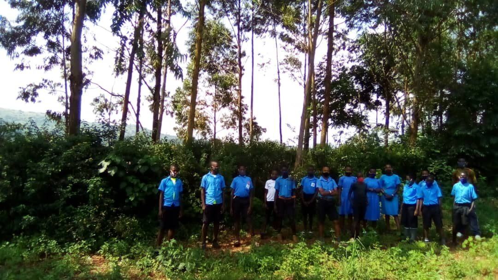
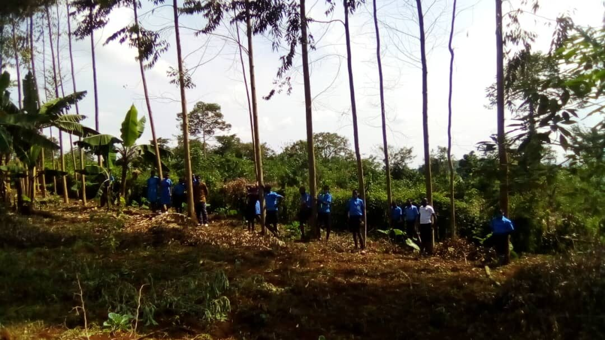
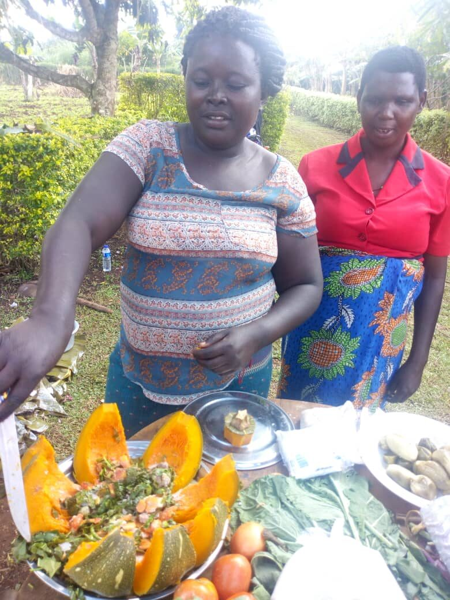
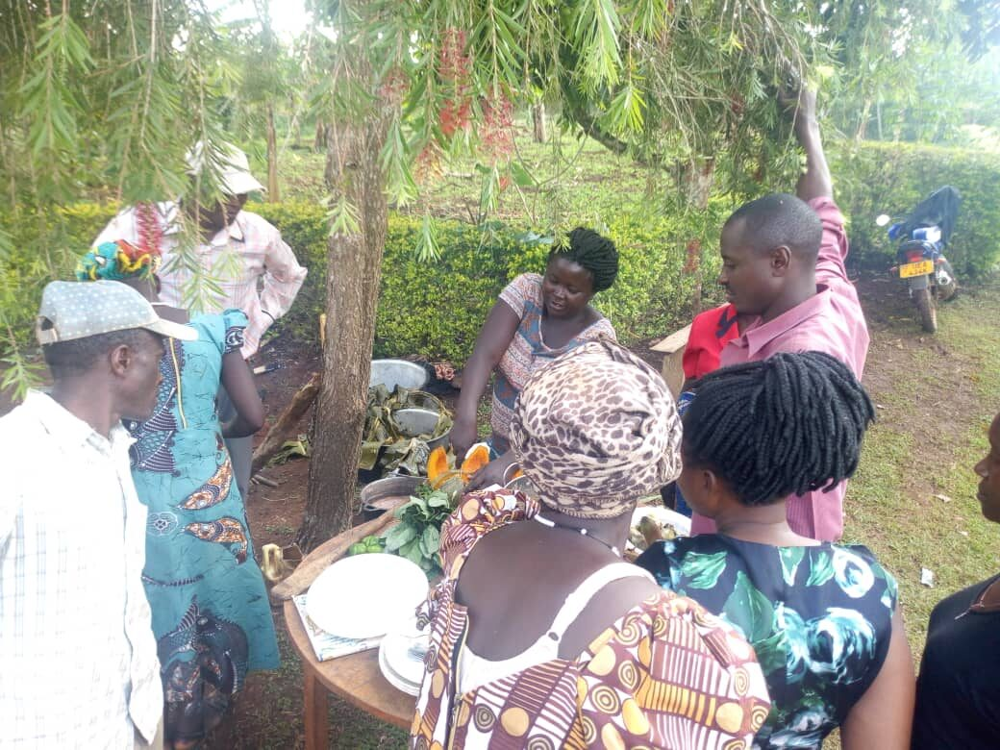
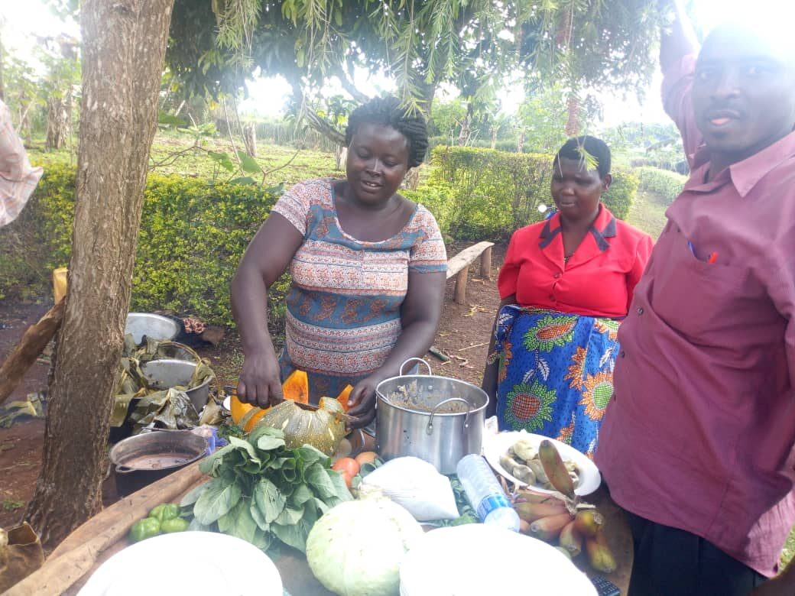
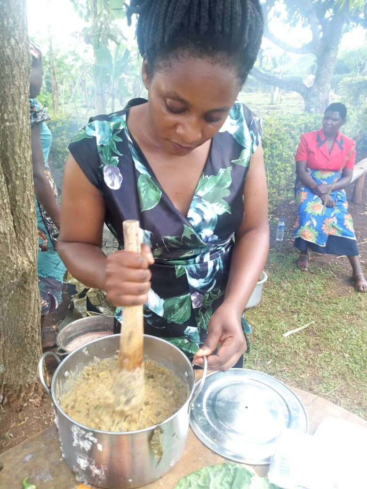
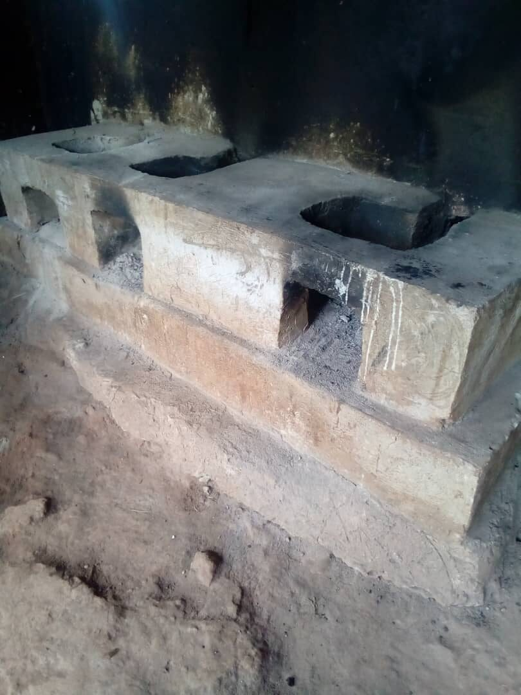
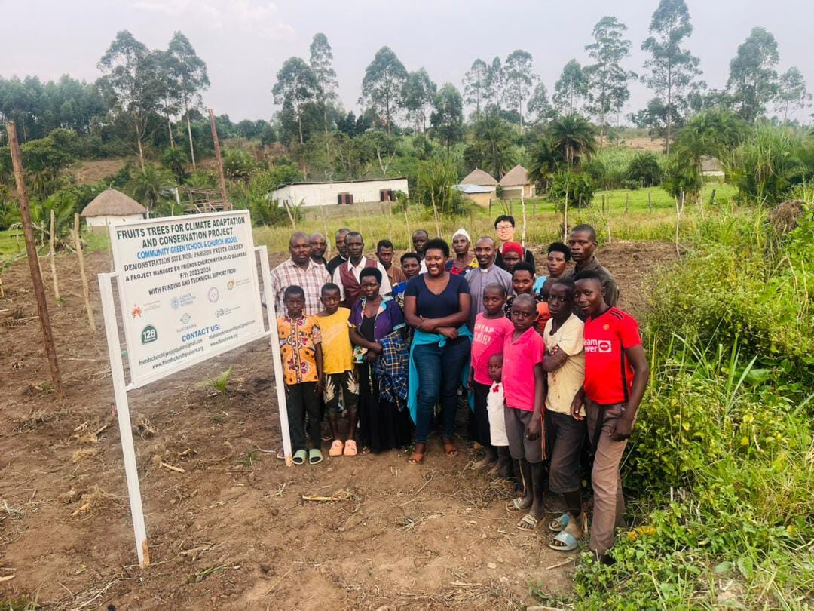

Home / Green Schools
Program 3 · Foundational learning
Image of God Kindergarten & Interfaith Green Schools Network
Eliminating distance and malnutrition barriers to foundational learning. No child should be locked out of their future due to geographical abandonment.

The problem we solved
From a 10 km walk to a school next door
Before our intervention, young children in Kigoba-Nsinde Village had to walk over 10 kilometers to reach the nearest school, driving severe early-childhood dropout rates.
The Image of God Kindergarten now anchors a 52+ school Interfaith Green Schools Network across Western Uganda. Every school operates as a living ecological workspace.
Every school is a living workspace
What each green school provides
Hands-on climate education
On-site indigenous tree nurseries, rooftop rainwater harvesting and clean-energy institutional kitchens.
OVC enrollment & nutrition
Dedicated enrollment campaigns for Orphans and Vulnerable Children, backed by organic, bio-intensive school gardens that deliver daily, nutrient-dense meals.
Integrated child health
Routine pediatric check-ups and safe transport tracking to eliminate distance- and hunger-related school dropouts.
From the field · Kyenjojo District
Nutrition, agroforestry & clean energy in our schools
Field photos from nutrition activities in Kyenjojo under the UMSFNP nutrition project: agroforestry at St. Mary's Primary School, cookery demonstrations at Nyarukoma Primary School and clean energy-saving stoves at Butiiti Girls.








Co-invest in community-owned assets
Your contribution is catalytic seed capital for revenue-generating social enterprises that sustain themselves.